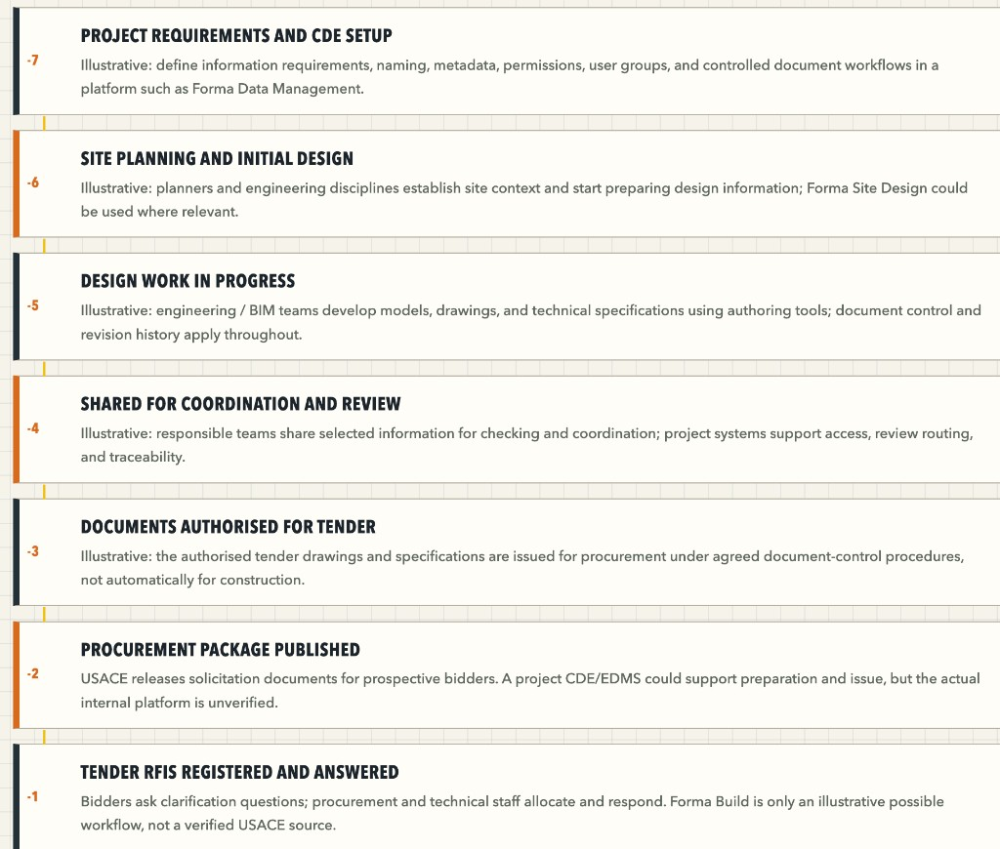
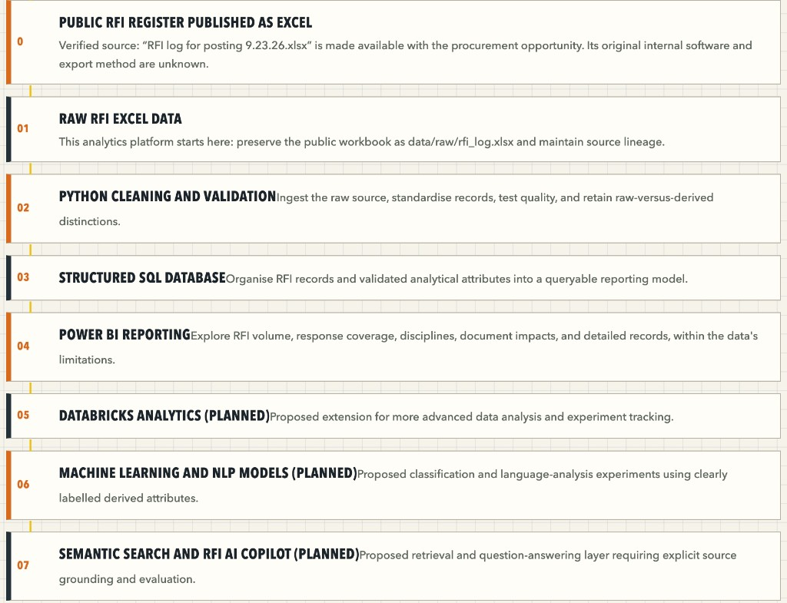

Baseline status
- Sheet
- 01
- Date
- 13 Oct 2026
- Files
- 14
- Step
- −7
Current step: −7, Project requirements and CDE setup. The Project Files tree is in Autodesk Forma Data Management on Construction: Sample Project – Snowdon Towers. Folder structure and file placement are done. Metadata, permissions, user groups, and a controlled document workflow are still open inside this step.
1. What this baseline records
This report freezes the position before the next project step. The local folder was listed on 13 October 2026 and the same five folders were uploaded under Forma Project Files.
- Platform: Autodesk Forma, Data Management, Files.
- Project: Construction: Sample Project – Snowdon Towers.
- Local source:
Project Files/andProject Files_2026-10-13_01-27-04pm.zip. - Source file count: 14 files, about 34.4 MB, across five type folders.
The five folders group files by type. They are a practice filing structure. They are not an ISO 19650 state model of Work in Progress, Shared, Published, and Archived.
2. Position on the workflow
The two charts below are the sequence this baseline is read against. This practice project is on the first chart, at step −7. Power BI is step 04 on the second chart.


| Step | Name | Position at this baseline |
|---|---|---|
| −7 | Project requirements and CDE setup | In progress. Files are in Forma. Register, permissions, and workflow controls are still to do. |
| −6 | Site planning and initial design | Sample drawings and a model are present as content. This practice project has not run a site-planning activity. |
| −5 | Design work in progress | Same sample content. No authoring session has been recorded. |
| −4 to −1 | Share, authorise, procure, answer tender RFIs | No review, approval, or procurement action is recorded. |
| 0 to 04 | Public RFI Excel through Power BI | Later, and on the analytics path in Report 08. Power BI has not started. |
3. Where the records sit
The Forma shell is Report 02. The fourteen files are read in Report 03. S102, the one sheet opened on screen, is Report 04. The structural model is Report 05.
The issue workbook, the steps that produce it, and the 289-row profile are Report 06. Finishing CDE setup is Report 07. Power BI is Report 08, and it stays later.
4. Held for the next step
- Forma file-detail screenshots: version, uploader, attributes, and preview.
- A filled document register. Revision and suitability stay blank until the file or Forma shows them.
- A Files log export, if the account provides one.
- Any copy of the workbook into an analytics
data/rawfolder. The workbook in04_Reportsremains the source.